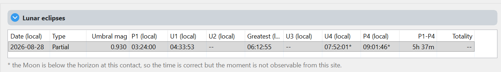

Contacts & Moon visibility
Read the lunar contacts and distinguish event timing from what is observable at your site.
The contact sequence
The lunar planner calculates the Moon’s passage through Earth’s shadow. Penumbra means the outer, lighter shadow; umbra means the central, darker shadow. The chronological sequence for a total eclipse is:
P1 → U1 → U2 → Greatest → U3 → U4 → P4
| Contact | Meaning |
|---|---|
| P1 | Penumbral eclipse begins. |
| U1 | The Moon begins entering the umbra; partial eclipse begins. |
| U2 | The whole Moon is inside the umbra; totality begins. |
| Greatest | Maximum eclipse. The plan separates ingress and egress here. |
| U3 | The Moon begins leaving the umbra; totality ends. |
| U4 | The Moon has left the umbra; partial eclipse ends. |
| P4 | Penumbral eclipse ends. |
A partial eclipse has no U2 or U3. A penumbral eclipse has no umbral contacts. Missing contacts do not represent missing data: the planner builds the phases that exist for the selected event.
Read timing and visibility separately
Lunar contacts are geocentric shadow events. The observing site determines the Moon’s altitude, visibility and local-time display; it does not turn them into the local solar C1–C4 contacts. Atmospheric refraction affects the visibility calculation, not the lunar shadow contact times.
A contact marked * in the results occurs with the Moon below the horizon. Read the legend under the table. A below-horizon greatest eclipse does not by itself mean the entire event is unavailable: inspect the other phases and their observable portions.

Umbral mag describes how far the Moon’s diameter enters the umbra at greatest eclipse. It is not the fraction of the lunar surface area covered. Totality corresponds to an umbral magnitude of at least 1.